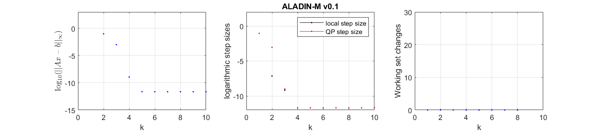

An example from machine learning
Here we give a simple classification example how ALADIN-\alpha can be used for machine learning problems. The goal here is finding a suitable parameter w that classify the input data into its label.
Loss Function
Let x_j be the j-th input data and y_j be its label, let N be the number of input data, let n_x be the dimension of input data, let w be the decision variable. We consider a \ell_2-regularized logistic regression loss function
We add the term \frac{\gamma}{2} \lVert w \rVert_2^2 in order to prevent overfitting, where \gamma is a hyperparameter chosen by user.
Distributed Problem Setup
To solve this problem, we divide the input data set into several groups and each group specifies a subsystem. We set the number of subsystems N_{subs} to 10, that is, the capacity of each subsystem is cap=N/N_{subs}.
1 2 3 4 5 6 7 8 9 10 11 12 13 14 15 16 | |
Next, we define the decision variable w and set up the OCP problem. Because the volume of each group is cap and the dimension of data point is n_x, the dimension of w should be cap*n_x. It is obvious that we can also divide w into cap groups, we denote it as w_j, j =1,2,...,cap. Therefore, equality constraints occurs naturally:
Note that the form of the objective functions for each subsystem are same, so we define the objective function with parameter xy, which represents the input data and their labels for each subsystem. So we get:
1 2 3 4 5 6 7 8 9 10 11 12 13 14 15 16 17 18 | |
Next, we construct the consensus matrix \{ A_i\}, i=1,2,...N_{subs}.
1 2 3 4 5 6 7 8 | |
In the last step, we convert the CasADi symbolic expressions to the MATLAB functions and set up the initial guess z_i^0 and \lambda_0. Note that the objective function is parameterized with input data xy and the constraints for each subsystem are the same.
1 2 3 4 5 6 7 8 9 10 11 | |
Solution with ALADIN-\alpha
To solve this distributed problem with ALDIN-\alpha, we still need to set up some options.
1 2 3 4 5 6 7 8 | |
If the option plot is true, we can see that the algorithm converges in about 5 iterations, which is quite fast.
